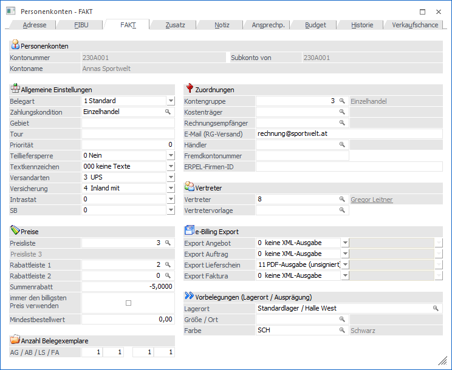
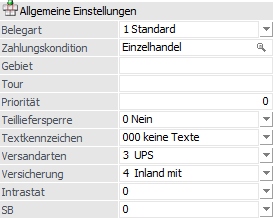
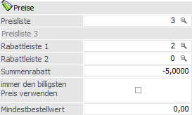
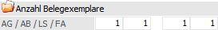
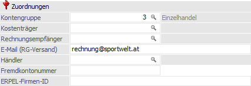
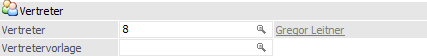
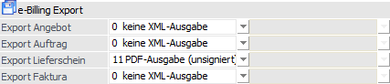
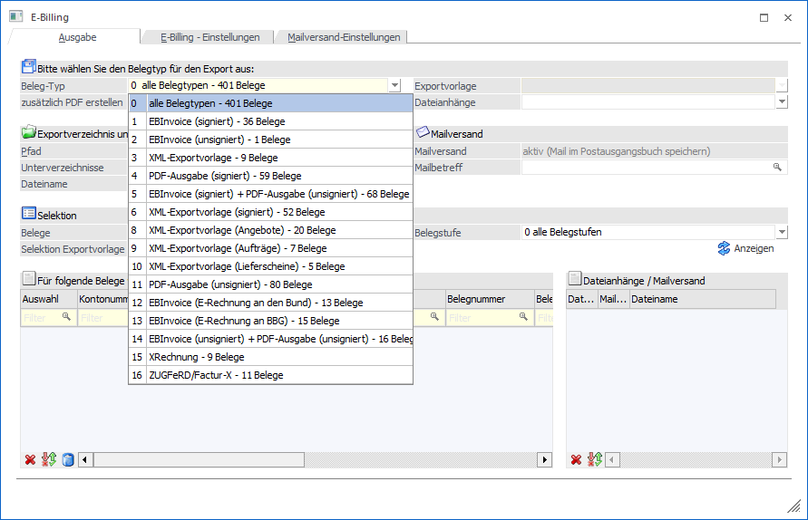
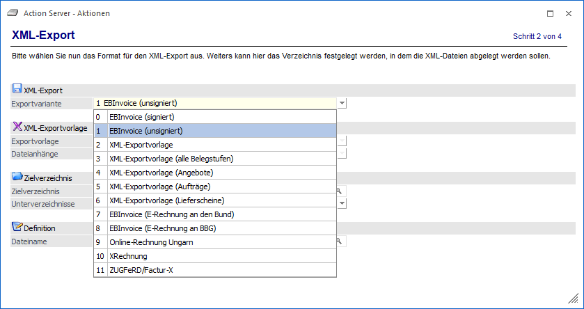
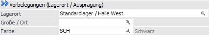

Im Register "FAKT" des Personenkontenstamms werden alle wesentlichen Informationen verwaltet, welche speziell die Fakturierung betreffen.
Hinweis
Handelt es sich bei dem Personenkonto um ein sogenanntes Subkonto, so stammen die nachfolgenden Daten vom Hauptkonto und sind nicht veränderbar (nähere Information zu dem Thema "Haupt- und Subkonto" entnehmen Sie bitte dem Kapitel Personenkonten - Anlage, Bereich "Kontenstamm").

Folgende Eingabefelder, Einstellungen und Informationen stehen zur Verfügung:
Personenkonten

Ø Kontonummer
An dieser Stelle wird die Kontonummer des ausgewählten Personenkontos angezeigt.
Ø Subkonto von
Handelt es sich bei dem aktuellen Personenkonto fakturierungstechnisch um ein Subkonto eines anderen Personenkontos, so wird hier die Kontonummer des sogenannten Hauptkontos angezeigt und alle folgenden Felder sind für eine Eingabe gesperrt. Handelt es sich nicht um einen Subkonto, so wird an dieser Stelle die Personenkontennummer des aktuellen Kontos dargestellt.
Ø Kontoname
Hier wird der Kontoname des aktuell gewählten Kontos dargestellt.
Allgemeine Einstellungen

Ø Belegart
Angabe der Standard-Belegart des Personenkontos. Aus der Auswahlliste kann eine der bereits angelegten Belegarten ausgewählt werden, wobei bei Kunden nur die Verkaufs- und bei Lieferanten nur die Einkaufsbelegarten vorgeschlagen werden.
Ø Zahlungskondition
Wird hier eine Konditionenzeile hinterlegt, so wird diese Zahlungskondition in der WinLine FAKT zur Berechnung der Faktura herangezogen. Bei der Neuanlage eines Kontos wird die erste Zahlungskondition vorgeschlagen und gespeichert, wenn das Feld "Zahlungskondition" nicht explizit angesprochen wurde.
Hinweis 1
Wird eine Zahlungskondition angegeben die bereits auf "inaktiv" gesetzt wurde, erfolgt eine entsprechende Meldung; die Zahlungskondition kann jedoch hinterlegt werden.
Hinweis 2
In die WinLine FIBU wird beim Fakturendruck immer die Zahlungskondition aus dem Belege (d.h. in der Regel aus diesem Feld) übergeben. Weicht die FIBU-Zahlungskonditionszeile von der FAKT-Zahlungskonditionszeile ab, hat somit die FAKT-Zeile höhere Priorität.
Ø Gebiet
Eingabe eines Gebietes, in dem der Kunde seinen Standort hat. Nach dem Gebiet kann bei diversen Auswertungen in der WinLine FAKT eingeschränkt werden.
Ø Tour
Eingabe einer Touren-Nummer. Nach der Touren-Nummer kann bei diversen Auswertungen in der WinLine FAKT eingeschränkt werden.
Ø Priorität
Um einen Liefervorschlag nach Priorität gewichten zu können, kann hier die Prioritätsstufe (5stellig) des Kunden eingegeben werden. Kunden mit höherer Prioritätsstufe werden zuerst beliefert.
Ø Teilliefersperre
Durch Auswählen einer Option aus der Auswahlliste steuern man, ob bei diesem Kunden die Teilliefersperre auf Belegebene bzw. auf Zeilenebene erlaubt ist oder nicht.
ü 0 - Nein
Die Auswahl "0 - Nein"
bedeutet, dass Teillieferung generell erlaubt sind.
ü 1 - auf Belegebene
Bei Auswahl
dieser Option ist eine Teillieferung nicht erlaubt, d.h. es muss der gesamte
Beleg ohne Teillieferung (oder gar nicht) ausgeliefert werden.
ü 2 - auf Zeilenebene
Die Option
bedeutet, dass die Zeilen im Belegerfassen, in denen das Flag für
Teilliefersperre gesetzt ist, nur als Ganzes ausgeliefert werden können. Wenn
bei allen Zeilen das Flag gesetzt ist, können manche Zeilen komplett und manche
Zeilen gar nicht ausgeliefert werden.
Ø Textkennzeichen
Aus der Auswahlliste kann ein Textkennzeichen hinterlegt werden. Das Textkennzeichen steuert die Behandlung von Restliefermengen in der Belegbearbeitung.
Ø Belegkopftexte 1-4
Sind die Belegkopftexte in Verwendung, so kann im Personenkonto eine Vorbelegung getroffen werden, wobei pro Belegkopftext eine individuelle Hinterlegung erfolgen kann.
Hinweis
Die Definition der Belegkopftexte erfolgt in der WinLine FAKT üben den Menüpunkt "Stammdaten - Belegstammdaten - Belegkopftexte". Die Belegkopftexte werden bei der Belegbearbeitung in den Belegkopf (Register "Text") übernommen.
Preise

Ø Preisliste
Eingabe der Preisliste, die standardmäßig für diesen Kunden / Lieferanten verwendet werden soll. Durch Drücken der F9-Taste kann nach allen angelegten Preislisten gesucht werden.
Achtung
Wenn bei dem Personenkonto eine Fremdwährung hinterlegt wurde, so muss darauf geachtet werden, dass diese Fremdwährung mit jener Fremdwährung übereinstimmt, welche für die Preisliste definiert wurde. Ist dies nicht der Fall, so weist das Programm bei der Belegerfassung darauf hin.
Ø Rabattleiste 1 / Rabattleiste 2
Angabe der Rabattleiste für artikelabhängige Zeilenrabatte. Erhält der Kunde Staffelrabatte (z.B. Betrag 100,-; davon 10 % Rabatt und dann 5 % Rabatt), so werden 2 Rabattleisten eingetragen.
Ø Summenrabatt
An dieser Stelle erfolgt die Eingabe der Summenrabatt-Kondition des Personenkontos (= Rabatt am Belegende), wobei die Eingaben -99.99 bis 99.99 % möglich sind.
Hinweis
ü kein Vorzeichen -> Zuschlagprozent für Belegendbetrag
ü negatives Vorzeichen -> Rabattprozent für Belegendbetrag
Ø immer den billigsten Preis verwenden
Wird diese Checkbox aktiviert, so wird bei der Preisfindung immer der "billigste Preis" und nicht der Preis der Prioritätenlogik (spezifischer Preis vor allgemeinen Preis; Aktionspreise vor allgemeinen Preise usw.) vorgeschlagen, wobei die Preisliste immer berücksichtigt wird! Diese Einstellung findet an folgenden Stellen Berücksichtigung:
ü im Belegerfassen bei der Eingabe eines Artikels
ü in der Preisinfo im Belegerfassen (F8-Taste) -> gesuchter Preis wird rot markiert
ü beim Durchführen der Preisfindung in der Belegumstellung
Beispiel
Für einen Artikel ist die Standardpreisliste die Preisliste1. Zusätzlich ist ein Aktionspreis (datumsspezifischer Preis) für diesen Artikel (innerhalb der Preisliste 1 vorhanden).
Bei bestimmten Kunden sind Rabattvereinbarungen getroffen und diese Rabatte als "Zeilenrabatte" über die Preisliste hinterlegt (z.B. mittels Rabattmatrix). Dadurch kann es sein, dass der Standard-Verkaufspreis der Preisliste 1 abzüglich des Kundenrabattes günstiger ist als der normalerweise durch die WinLine herangezogene Aktionspreis.
Durch Aktivierung des Kennzeichens "immer den billigsten Preis verwenden" im Personenkontenstamm wird für den Kunden wiederum der kundenspezifische Preis herangezogen.
Ø Mindestbestellwert
Beim Erfassen eines Einkaufsbeleges und beim Erzeugen einer Lieferantenbestellung (Menüpunkt "Lieferantenbestellung bearbeiten") wird der hier eingegebene Mindestbestellwert berücksichtigt. Was bei einer Unterschreitung des Mindestbestellwertes passieren soll, kann in den Fakt-Parametern definiert werden (Warnung, Sperre, usw.; nähere Informationen entnehmen Sie bitte dem WinLine START-Handbuch, Kapitel "Fakt-Parameter").
Anzahl Belegexemplare

Ø AG / AB / LS / FA
Anzahl der Belegexemplare, die pro Stufe gedruckt werden sollen (Angebot / Anfrage, Auftrag / Bestellung, Lieferschein und Faktura) D.h. wenn das Original plus 2 Kopien gewünscht ist, so wird hier die Zahl 3 eingegeben.
Hinweis
Bei der Einstellung 0 und 1 wird immer nur das Original ausgedruckt.
Zuordnung

Ø Kontengruppe
An dieser Stelle kann die Kunden- bzw. Lieferantengruppe des Personenkontos hinterlegt werden. Nach dieser Kennzeichnung kann in verschiedene Auswertungen, wie z.B. der Verkaufsstatistik, eingegrenzt werden. Des Weiteren kann diese ein Bestandteil der Preisfindung sein.
Ø Kostenträger
Hier kann ein zum Personenkonto (Kunde) korrespondierender Kostenträger eingetragen werden. Dieser Kostenträger wird auch in der Belegbearbeitung vorgeschlagen.
Ø Rechnungsempfänger
Gibt es einen abweichenden Rechnungsempfänger für das Personenkonto, so kann hier die entsprechende Kontonummer eingegeben werden. Es sollte also nur dann eine Kundennummer eingetragen werden, wenn es sich z.B. um einen Filialbetrieb handelt, der zwar beliefert wird, wo die Rechnung aber immer an die Zentrale geschickt wird. Im späteren Ablauf wird bei der Erfassung eines Beleg für das Personenkonto dieses in die Lieferadresse kopiert und als Rechnungsempfänger das hier hinterlegte Konto verwendet.
Hinweis
Die Funktion "Rechnungsempfänger" kann in den Programmen "Belege erfassen" (inkl. individuelle Belegerfassung), "Quick erfassen", "Telesales" und "Kontrakte erfassen" genutzt werden, wenn dort die Option "Rechnungsempfänger verwenden" aktiviert wurde. Weitere Programmbereiche der WinLine (z.B. "Batchbeleg", "Batcherfassung von Belegen", "Projekte einlesen" oder "Lieferantenbelege erstellen") sind von der Funktion ausgenommen.
Ø E-Mail (RG-Versand)
In diesem Feld kann die E-Mail-Adresse des Empfängers für die elektronisch zu versendenden Rechnungen hinterlegt werden. Diese Hinterlegung wird als Vorschlag im E-Billing/Export verwendet.
Ø Händler
In diesem Feld kann eine zusätzliche Personenkontennummer hinterlegt werden (übergeordnetes Personenkonto). Diese Information dient zur Zusammenfassung von mehreren Personenkonten zu einem Hauptkonto, wobei es für die WinLine derzeit aber keine weiterführende Funktionalität gibt.
Ø Fremdkontonummer
Hier kann jene Kontonummer eingetragen werden, die der Kunde (z.B. Annas Sportwelt) als Lieferantenummer (Kreditorennummer) in seinem System für seinen Lieferanten (z.B. Fun & Workout) vergeben hat.
Diese Fremdkontonummer ist auch im EBInterface-Standard vorgesehen und wird somit beim Export von Belegen im EBInvoice-XML-Format (= Einstellung 1, 2 oder 5) in die XML-Datei gestellt.
Bei Verwendung der eBilling-Einstellung "12 - EBInvoice (E-Rechnung an den Bund)" oder "13 - EBInvoice (E-Rechnung an BBG)" muss dieses Feld mit einem Wert befüllt werden, da in weiterer Folge bei Einlieferung der XML-Datei an den Bund bzw. an BBG dieser Eintrag ein so genanntes Muss-Feld ist.
Vertreter

Ø Vertreter
Eingabe der für diesen Kunden / Lieferanten zuständigen Vertreter für die integrierte Vertreterabrechnung in der WinLine FAKT. Diese Eingabe dient in der Belegbearbeitung als Vorschlag und kann jederzeit manuell übersteuert werden.
Ø Vertretervorlage
In diesem Feld kann eine Vertretervorlage hinterlegt werden. Über die so genannten "Vertretervorlagen" können Vertreter über Artikelgruppen zu Personenkonten zugeordnet werden.
e-Billing Export

Ø Exportkennzeichen (Angebot, Auftrag, Lieferschein, Faktura)
Mit dieser Einstellung kann gesteuert werden, wie die Ausgabe für eBilling-Belege erfolgen soll. Aus den dafür vorgesehenen Auswahlliste kann hierfür pro Belegstufe das so genannte Exportkennzeichen angegeben werden, wobei in jeder Auswahl nur jene Möglichkeiten vorgeschlagen werden, die zur jeweiligen Belegstufe "passen". Die Exporttypen "4 - PDF-Ausgabe signiert" und "11 - PDF-Ausgabe unsigniert" stehen für alle Belegstufen zur Verfügung.
Zur Auswahl stehen pro Belegstufe folgende Möglichkeiten:
Export Angebot
ü 0 - keine XML-Ausgabe
ü 4 - PDF-Ausgabe (signiert)
ü 8 - XML-Exportvorlage (Angebote) => Hier kann zusätzlich die zu verwendende Exportvorlage angegeben werden
ü 11 - PDF-Ausgabe (unsigniert)
Export Auftrag
ü 0 - keine XML-Ausgabe
ü 4 - PDF-Ausgabe (signiert)
ü 9 - XML-Exportvorlage (Aufträge) => Hier kann zusätzlich die zu verwendende Exportvorlage angegeben werden
ü 11 - PDF-Ausgabe (unsigniert)
Export Lieferschein
ü 0 - keine XML-Ausgabe
ü 4 - PDF-Ausgabe (signiert)
ü 10 - XML-Exportvorlage (Lieferschein) => Hier kann zusätzlich die zu verwendende Exportvorlage angegeben werden
ü 11 - PDF-Ausgabe (unsigniert)
Export Faktura
ü 0 - keine XML-Ausgabe
ü 1 - EBInvoice (signiert)
ü 2 - EBInvoice (unsigniert)
ü 3 - XML-Exportvorlage => Hier kann zusätzlich die zu verwendende Exportvorlage angegeben werden
ü 4 - PDF-Ausgabe (signiert)
ü 5 - EBInvoice (signiert) + PDF-Ausgabe (unsigniert)
ü 6 - XML-Exportvorlage (signiert) => Hier kann zusätzlich die zu verwendende Exportvorlage angegeben werden, wobei zu beachten ist, dass nur jene XML-Exportvorlagen auswählbar sind, die das Exportkennzeichen "10 - Signatur hier einfügen" enthalten.
ü 11 - PDF-Ausgabe (unsigniert)
ü 12 - EBInvoice (E-Rechnung an den Bund)
ü 13 - EBInvoice (E-Rechnung an BBG)
ü 14 - EBInvoice (unsigniert) + PDF-Ausgabe (unsigniert)
ü 15 - XRechnung
ü 16 - ZUGFeRD (XML)
ü 17 - ZUGFeRD/Factur-X (PDF inkl. XML)
Hinweis
Das Exportkennzeichen "7 - Exportvorlage (alle Belegstufen)" steht ab Version 11.12 nicht mehr zur Verfügung.
Ø Exportvorlage
Rechts neben der Auswahl des Exportkennzeichens kann pro Belegstufe, abhängig vom gewählten Exporttyp, aus einer weiteren Auswahlliste eine zugehörige Exportvorlage ausgewählt werden. Hierzu werden wiederum nur jene Exportvorlagen vorgeschlagen, die zum jeweiligen Exporttyp verwendet werden können. D.h. z.B. werden Vorlagen mit bzw. ohne Signatur nur bei jenen Exportkennzeichen vorgeschlagen, deren Typ eine Signatur bzw. keine Signatur verlangt.
Bei Exporttypen die keine individuelle Vorlage verwenden, sind die Auswahlfelder nicht anwählbar.
Hinweis
Die Felder für die Exportvorlage können auch einen Leereintrag haben, dann muss die gewünschte Vorlage beim Exportvorgang angegeben werden.
Achtung
In den individuellen-Fenstern werden in den Feldern der Exportvorlagen immer alle Exportvorlagen angezeigt. Erst beim Speichern des Personenkontos wird geprüft, ob die Auswahl korrekt ist, d.h. ob ein Exporttyp mit Vorlage (oder ggf. kein Export) ausgewählt wurde und ob die Vorlage vorhanden ist und dem Exportkennzeichen entsprechend eine Signatur benötigt oder nicht.
Beim Erfassen von Belegen wird dieses Exportkennzeichen, sowie die angegebene Exportvorlage in den Belegkopf übernommen. Ggfs. wird diese Einstellung über die verwendete Belegart übersteuert.
Dadurch werden die Belege in weiterer Folge im Menüpunkt "E-Billing - Export" zum Export bzw. zur Signatur und darauffolgenden Export in den entsprechenden Bereich gestellt.

Bei den Einstellungen 2, 3, 11, 12, 13, 15 und 16 können die Belege auch via ActionServer exportiert werden:

Hinweis
Wenn diese Optionen verwendet werden, dann werden Rechnungen in der WinLine FAKT nicht im "Originaldruck" ausgedruckt.
Vorbelegungen (Lagerort / Ausprägung)

Ø Lagerort
An dieser Stelle kann der Lagerort für eine automatische Lagerortaufteilung innerhalb der Belegerfassung hinterlegt werden. Wenn der vorgegebene Lagerort nicht der letzten Hierarchie-Ebene entspricht, so erfolgt die Suche nach passenden Lagerorten innerhalb der vorgegebenen Hierarchie.
Hinweis
Ob diese Vorbelegung genutzt werden soll, kann über die Belegart (Register "Erweitert") gesteuert werden. Weitere Hinweise zu der Vorbelegung und der automatischen Aufteilung entnehmen Sie bitte dem WinLine FAKT-Handbuch, Kapitel "Belegartenstamm - Register "Erweitert"".
Ø Ausprägung 1 (hier "Größe / Ort") / Ausprägung 2 (hier "Farbe")
In diesen beiden Feldern können Ausprägungen definiert werden, die in der weiteren Folge automatisch in der Belegerfassung für dieses Personenkonto genutzt werden sollen.
Hinweis
Ob diese Vorbelegung genutzt werden soll, kann über die Belegart (Register "Optionen") gesteuert werden. Weitere Hinweise zu der Vorbelegung und der automatischen Aufteilung entnehmen Sie bitte dem WinLine FAKT-Handbuch, Kapitel "Belegartenstamm - Register "Erweitert"".
Buttons
Zusätzlich zu den im Kapitel Personenkonten beschriebenen Buttons stehen hier die folgenden Buttons zur Verfügung:

Ø Individuelle Preise
Durch Anwahl des Buttons "Individuelle Preise" können für dieses Personenkonto individuelle Preise pro Artikel erfasst werden. Diese Preise werden unter jener Preisliste abgespeichert, die zuvor im Personenkonto erfasst wurde.
Ø Statistik
Durch Anklicken des Buttons "Statistik" wird eine Kurz-Statistik zu diesem Personenkonto aufgerufen, wobei diese Statistik entweder komprimiert oder mit Einzelzeilen ausgegeben werden kann.